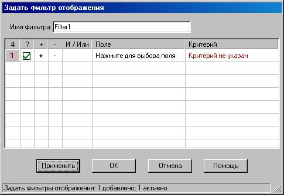
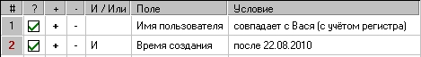
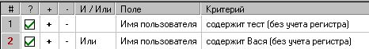

Фильтр — это условие или набор условий, которым удовлетворяет или не удовлетворяет элемент. Password Safe позволяет определить фильтры и отобразить лишь те элементы, которые удовлетворяют заданным в них условиям. Вы можете сформировать фильтр для разового использования, или же создать один или несколько именованных фильтров и сохранить их для повторного использования. Фильтры могут быть сохранены внутри контейнера или во внешнем файле (для использования с разными контейнерами).
Создание фильтра
Для создания нового фильтра выберите пункт меню «Просмотр»→«Фильтры»→«Создать/Редактировать фильтр». Будет отображён следующий диалог:
Каждый фильтр состоит из одной или нескольких строк, каждая из которых описывает условие для указанного поля. Записанное в строке условие, может быть связано с предыдущими логическим «И» или «ИЛИ». С помощью этого можно создать следующие виды фильтров:
1. Все элементы, с именем пользователя «вася», «Вася» или «ВАСЯ»:

2. Все элементы, с именем пользователя «Вася» (точное совпадение), созданные после 1 мая 2008 года

3. Все элементы, с именем пользователя, содержащим «Вася» или «Маша»

Как видно из примеров, фильтры могут быть различной сложности.
Описание столбцов фильтра:
- «#» — номер условия. Отображается для удобства, и не может быть изменён.
- «?» — флажок в данном столбце определяет, используется данное условие или нет. При отборе записей по фильтру учитываются только те условия, у которых стоят флажки в данном поле. Щелчок в поле устанавливает/снимает флажок.
- «+» — щелчок по данному полю добавляет новую строку после текущей.
- «-» — щелчок по этому полю приводит к удалению текущей строки. Примечание. Так условие удаляется навсегда, в некоторых случаях удобнее отключить его, а не удалить.
- «И / Или» — позволяет определить связь с предыдущим условием.
- «Поле» — содержит имя поля на которое накладывается условие («Имя пользователя», «Пароль», «Заголовок», «Группа», и пр.).
- «Условие» — описывает условие, накладываемое на выбранное поле. После выбора поля щелчок в данной ячейке приводит к отображению списка с доступными условиями.